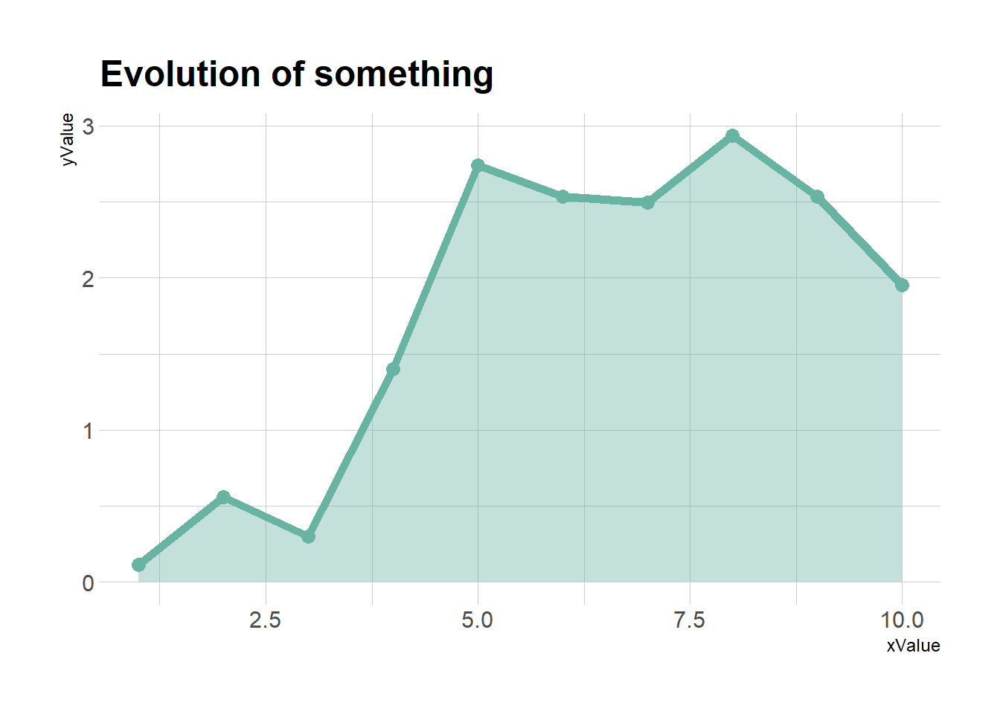
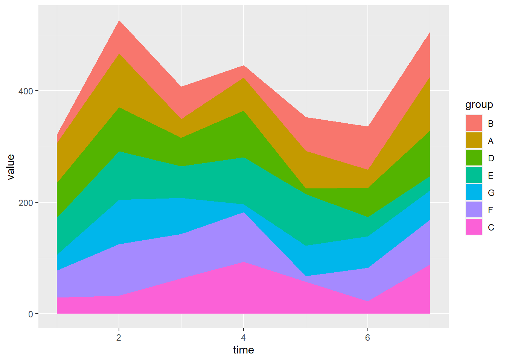
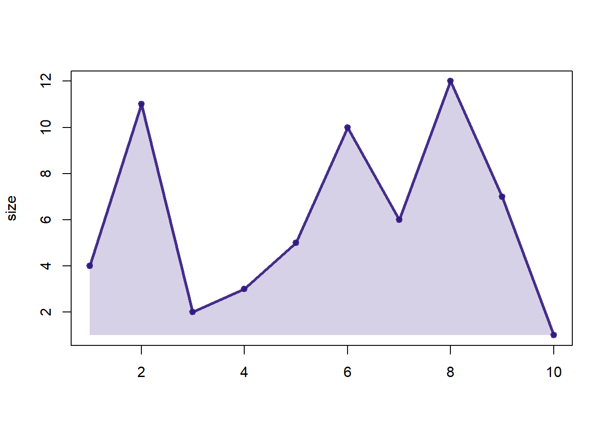
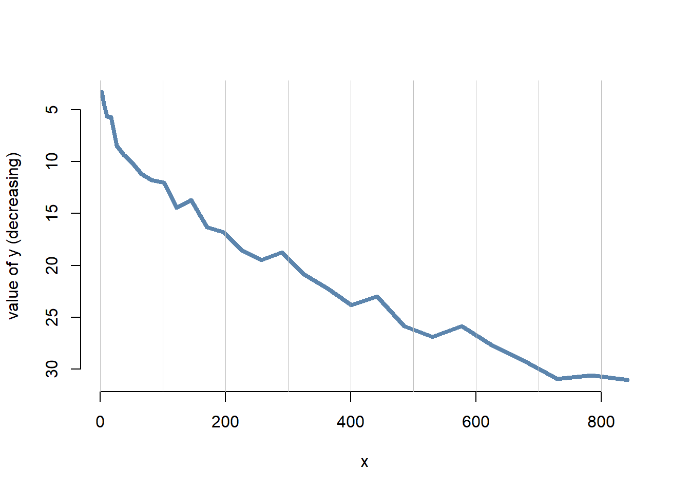
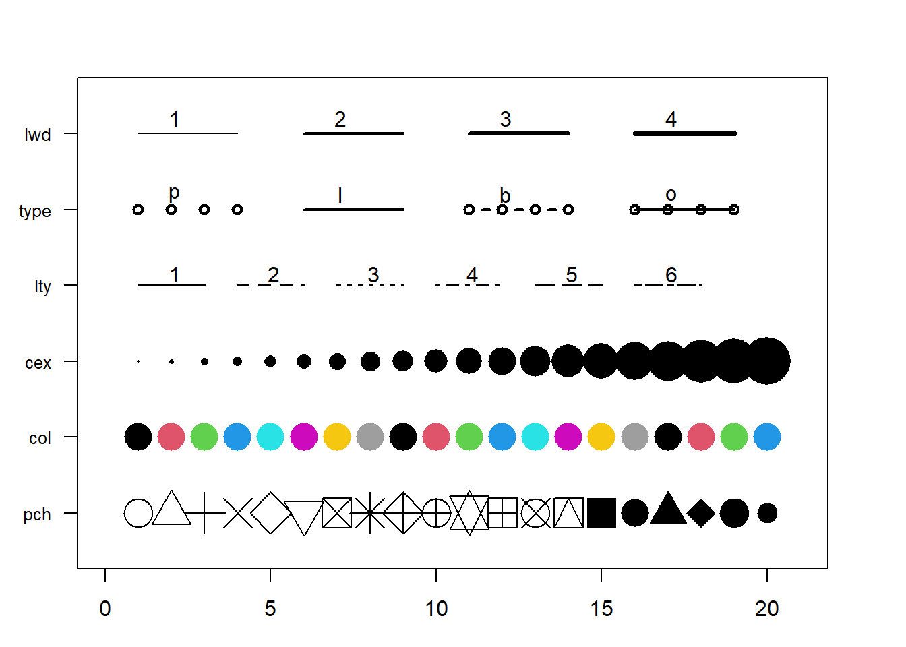
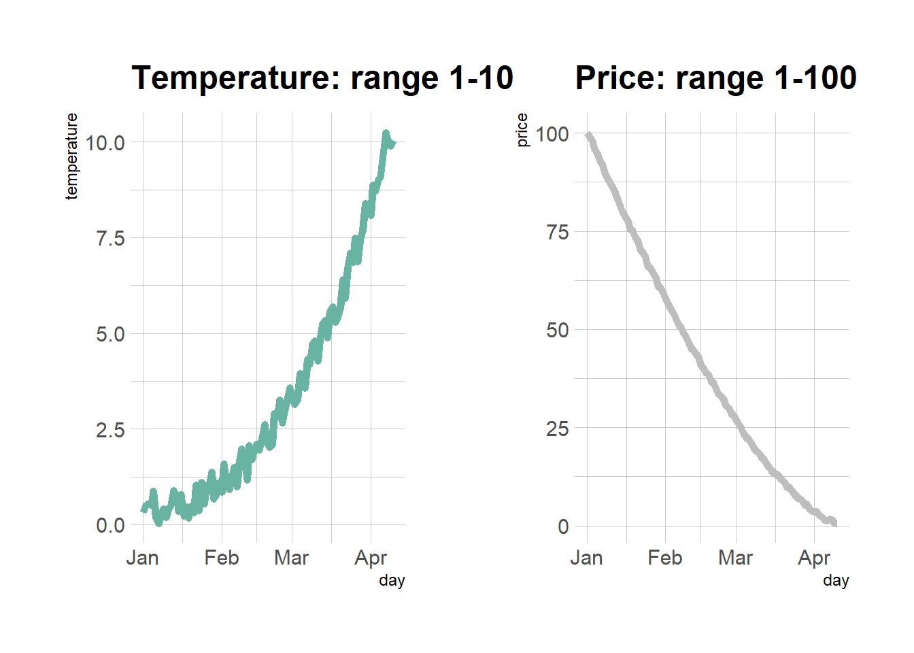
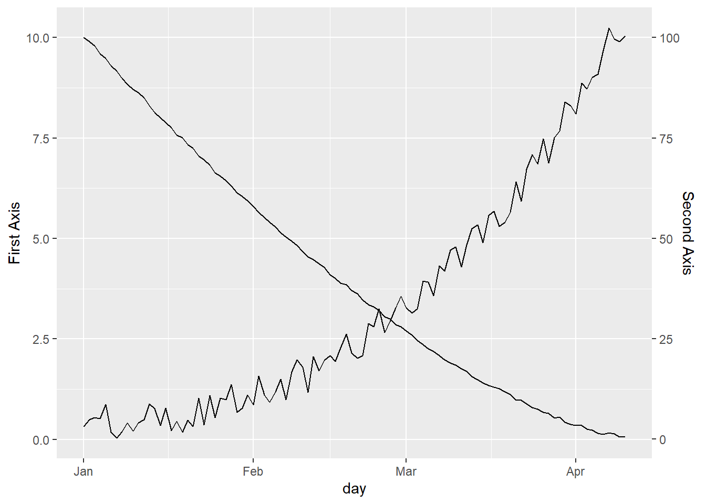
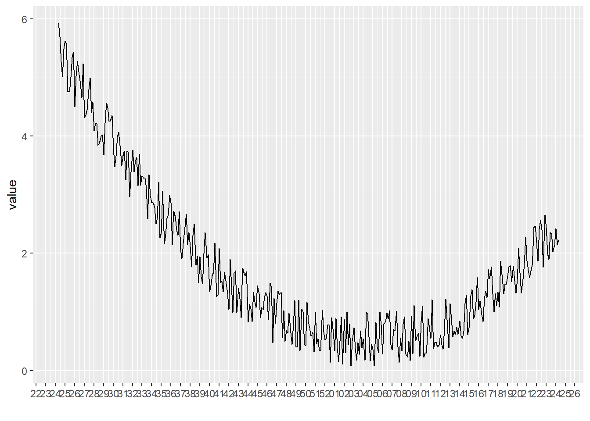

Chapter 6 Evolution

Figure 6.1: Multi Group Line Chart with Ggplot2
6.1 Area Chart
An area chart represents the evolution of a numeric variable. It is very close to a line chart. This section displays many examples build with R and ggplot2. Have a look to data-to-viz.com if want to learn more about line chart theory.
6.1.0.1 Note on Area Chart
This section is tightly linked with other sections. A line chart is the same but doesnt fill the surface between the line and the X axis. A connected scatterplot is almost the same thing, but each observation is represented as a dot. More generally, the time series section can interest you.
6.1.0.2 Step by Step with ggplot2
ggplot2 allows to draw line charts thanks to the geom_line() function. It expects as input a data frame with 2 numeric variables, one displayed on each axis. Start your journey with the most basic line chart.
6.1.1 Area Chart with R and ggplot2
This section is a step by step introduction to area chart with R and ggplot2. It provides several reproducible examples with explanation and R code.
6.1.1.1 Basic Line Chart with ggplot2 and geom_line()
An area chart displays the evolution of one or several numeric variables. Data points are usually connected by straight line segments, and the area between the X axis and the line is filled. See data-to-viz for a more in-depth definition.
As for a line chart, the input data frame requires at least 2 columns:
- An ordered numeric variable for the X axis
- Another numeric variable for the Y axis
Once the data is read by ggplot2 and those 2 variables are specified in the x and y arguments of the aes(), just call the geom_area() function.
# Libraries
library(ggplot2)
# create data
xValue <- 1:50
yValue <- cumsum(rnorm(50))
data <- data.frame(xValue,yValue)
# Plot
ggplot(data, aes(x=xValue, y=yValue)) +
geom_area()6.1.2 Customize the Line Chart
Several options are available to customize the area chart appearance:
- Add a title with
ggtitle(). - Change line style with arguments like
shape,size,colorand more. - Add transparency to the filled region with opacity
- Custom the general theme with the
theme_ipsum()function of thehrbrthemespackage. - Highlight the top line with
geom_line() - If not too many observation, show individual data points with
geom_point()
More generally, visit the ggplot2 section for more ggplot2 related stuff.
# Libraries
library(ggplot2)
library(hrbrthemes)
# create data
xValue <- 1:10
yValue <- abs(cumsum(rnorm(10)))
data <- data.frame(xValue,yValue)
# Plot
ggplot(data, aes(x=xValue, y=yValue)) +
geom_area( fill="#69b3a2", alpha=0.4) +
geom_line(color="#69b3a2", size=2) +
geom_point(size=3, color="#69b3a2") +
theme_ipsum() +
ggtitle("Evolution of something")
6.1.3 Basic Stacked Area Chart with R
This post provides the basics concerning stacked area chart with R and ggplot2. It takes into account several input format types and show how to customize the output.
6.1.3.1 Most Basic Stacked Area with ggplot2
The data frame used as input to build a stacked area chart requires 3 columns:
x: Numeric variable used for the X axis, often it is a time.y: Numeric variable used for the Y axis. What are we looking at?group: One shape will be done per group.
The chart is built using the geom_area() function.
# Packages
library(ggplot2)
library(dplyr)
# create data
time <- as.numeric(rep(seq(1,7),each=7)) # x Axis
value <- runif(49, 10, 100) # y Axis
group <- rep(LETTERS[1:7],times=7) # group, one shape per group
data <- data.frame(time, value, group)
# stacked area chart
ggplot(data, aes(x=time, y=value, fill=group)) +
geom_area()6.1.4 Control Stacking Order with ggplot2
The gallery offers a section dedicated to reordering with ggplot2. This step can be tricky but the code below shows how to:
- Give a specific order with the
factor()function. - Order alphabetically using
sort(). - Order following values at a specific data.
# Give a specific order:
data$group <- factor(data$group , levels=c("B", "A", "D", "E", "G", "F", "C") )
# Plot again
ggplot(data, aes(x=time, y=value, fill=group)) +
geom_area()
# Note: you can also sort levels alphabetically:
myLevels <- levels(data$group)
data$group <- factor(data$group , levels=sort(myLevels) )
# Note: sort followinig values at time = 5
myLevels <- data %>%
filter(time==6) %>%
arrange(value)
data$group <- factor(data$group , levels=myLevels$group )6.1.5 Proportional Stacked Area Chart
In a proportional stacked area graph, the sum of each year is always equal to hundred and value of each group is represented through percentages.
To make it, you have to calculate these percentages first. This can be done using dplyr of with base R.
# Compute percentages with dplyr
library(dplyr)
data <- data %>%
group_by(time, group) %>%
summarise(n = sum(value)) %>%
mutate(percentage = n / sum(n))
# Plot
ggplot(data, aes(x=time, y=percentage, fill=group)) +
geom_area(alpha=0.6 , size=1, colour="black")# Note: compute percentages without dplyr:
my_fun <- function(vec){
as.numeric(vec[2]) / sum(data$value[data$time==vec[1]]) *100
}
data$percentage <- apply(data , 1 , my_fun)6.1.6 Color & Style
Lets improve the chart general appearance:
- Usage of the
viridiscolor scale. theme_ipsumof the hrbrthemes package.- Add title with
ggtitle.
# Library
library(viridis)
library(hrbrthemes)
# Plot
ggplot(data, aes(x=time, y=value, fill=group)) +
geom_area(alpha=0.6 , size=.5, colour="white") +
scale_fill_viridis(discrete = T) +
theme_ipsum() +
ggtitle("The race between ...")6.1.7 Stacking Area Charts
6.1.7.1 What is Stacking
Stacking is a process where a chart is broken up across more than one categoric variables which make up the whole. Each item of the categoric variable is represented by a shaded area. These areas are stacked on top of one another.
Here is an example with a stacked area chart. It shows the evolution of baby name occurence in the US between 1880 and 2015. Six first names are represented on top of one another.
# Libraries
library(tidyverse)
library(babynames)
library(streamgraph)
library(viridis)
library(hrbrthemes)
library(plotly)
# Load dataset from github
data <- babynames %>%
filter(name %in% c("Amanda", "Jessica", "Patricia", "Deborah", "Dorothy", "Helen")) %>%
filter(sex=="F")
# Plot
p <- data %>%
ggplot( aes(x=year, y=n, fill=name, text=name)) +
geom_area( ) +
scale_fill_viridis(discrete = TRUE) +
theme(legend.position="none") +
ggtitle("Popularity of American names in the previous 30 years") +
theme_ipsum() +
theme(legend.position="none")
ggplotly(p, tooltip="text")6.1.7.2 Heaven or Hell?
The efficiency of stacked area graph is discussed and it must be used with care. To put it in a nutshell:
Stacked graphs are
appropriateto study theevolution of the wholeand therelative proportionsof each group. Indeed, the top of the areas allows to visualize how the whole behaves, like for a classic area chart. In the previous graphic, it is easy to see that in 1920, Helen and Dorothy were common names but the 4 other names barely existed.However, they are
not appropriateto study theevolution of eachindividual group. This is due to 2 main reasons. First, all except the since they do not have a flatbaseline, it is very hard to read their values at each tile stamp.
6.1.8 Example: Mental Arithmetic
In the previous graphic, try to find out how many times the name Dorothy was given in 1920.
It is not trivial to find it out using the previous chart. You have to mentally do 75000 - 37000 which is hard. If you want to convey a message efficiently, you dont want the audience to perform mental arithmetic.
6.1.8.1 Example: Optical Illusion.
Important note: this section is inspired from this post by Dr.Drang. Dr Drang gives this nice example. Consider the graphic below, and try to visualize how the 3 categories evolved on the period:
# create dummy data
don <- data.frame(
x = rep(seq(2000,2005), 3),
value = c( 75, 73, 68, 57, 36, 0, 15, 16, 17, 18, 19, 20, 10, 11, 15, 25, 45, 80),
group = rep(c("A", "B", "C"), each=6)
)
#plot
don %>%
ggplot( aes(x=x, y=value, fill=group)) +
geom_area( ) +
scale_fill_viridis(discrete = TRUE) +
theme(legend.position="none") +
theme_ipsum() +
theme(legend.position="none")It looks obvious that the yellow category increased, the purple decreased, and the green. is harder to read. At a first glance it looks like it is slightly decreasing I would say.
Now lets plot just the green group to find out:
#plot
don %>%
filter(group=="B") %>%
ggplot( aes(x=x, y=value, fill=group)) +
geom_area( fill="#22908C") +
theme(legend.position="none") +
theme_ipsum() +
theme(legend.position="none")6.1.8.2 Workaround
If you have just a few categories, I would suggest to build a line chart. Here it is easy to follow a category and understand how it evolved accurately.
data %>%
ggplot( aes(x=year, y=n, group=name, color=name)) +
geom_line() +
scale_color_viridis(discrete = TRUE) +
theme(legend.position="none") +
ggtitle("Popularity of American names in the previous 30 years") +
theme_ipsum()However, this solution is not suitable if you have many categories. Indeed, it would result in a spaghetti chart that is very hard to read. You can read more about this here.
Instead I would suggest to use `small multiple: here each category has its own section in the graphic. It makes easy to understand the pattern of each category.
data %>%
ggplot( aes(x=year, y=n, group=name, fill=name)) +
geom_area() +
scale_fill_viridis(discrete = TRUE) +
theme(legend.position="none") +
ggtitle("Popularity of American names in the previous 30 years") +
theme_ipsum() +
theme(
legend.position="none",
panel.spacing = unit(0.1, "lines"),
strip.text.x = element_text(size = 8)
) +
facet_wrap(~name, scale="free_y")6.1.8.3 Going Further
- Stacked Area Graphs Are Not Your Friend by Everyday analytics.
- Quantitative Displays for Combining Time-Series and Part-to-Whole Relationships by Stephen Few.
- I hate stacked area charts by Dr Drang.
6.1.9 Interactive Area Chart with R and plotly
The plotly package allows to build interactive charts directly from R. Here is a application to area chart, using both the plot_ly() and ggplotly() functions.
The ggplotly() function of the plotly library makes it a breeze to build an interactive version. Try to hover circles to get a tooltip, or select an area of interest for zooming. Double click to reinitialize.
6.1.10 Basic Line Chart with ggplot2 and geom_line()
Base R also allows to build area charts thanks to the polygon() function. This functions requires 2 inputs: x and y.
Note that extreme values of both are added at the beginning and at the end of each vectors to make sure the polygon is closed.
This section describes how to build an area chart using base R and the polygon() function. See the area chart section for a ggplot2 implementation.
# Create data
data <- data.frame(
x=seq(1,10),
y=sample(seq(1,15),10)
)
# Add line on top
plot( data$x , data$y , col=rgb(0.2,0.1,0.5,0.9) , type="o" , lwd=3 , xlab="" , ylab="size" , pch=20)
# Fill the area
polygon(
c(min(data$x), data$x , max(data$x)) ,
c( min(data$y) , data$y , min(data$y)) ,
col=rgb(0.2,0.1,0.5,0.2) , border=F
)
6.2 Line Chart
This is the line chart section of the gallery. If you want to know more about this kind of chart, visit data-to-viz.com. If youre looking for a simple way to implement it in R, pick an example below.
6.2.0.1 Note on Line Chart
This section is tightly linked with other sections. A connected scatterplot is almost the same thing, but each observation is represented as a dot. An area chart fills the surface between the line and the X axis. More generally, the time series section can interest you.
6.2.0.2 Step by Step with ggplot2
ggplot2 allows to draw line charts thanks to the geom_line() function. It expects as input a data frame with 2 numeric variables, one displayed on each axis. Start your journey with the most basic line chart.
6.2.1 Line Chart with R and ggplot2
This section is a step by step introduction to line chart with R and ggplot2. It provides several reproducible examples with explanation and R code.
6.2.1.1 Basic Line Chart with ggplot2 and geom_line()
A line chart or line graph displays the evolution of one or several numeric variables. Data points are usually connected by straight line segments. You read an extensive definition here.
The input data frame requires at least 2 columns:
- An ordered numeric variable for the X axis.
- Another numeric variable for the Y axis.
Once the data is read by ggplot2 and those 2 variables are specified in the x and y arguments of the aes(), just call the geom_line() function.
# Libraries
library(ggplot2)
# create data
xValue <- 1:10
yValue <- cumsum(rnorm(10))
data <- data.frame(xValue,yValue)
# Plot
ggplot(data, aes(x=xValue, y=yValue)) +
geom_line()
6.2.2 Customize the Line Chart
Several options are available to customize the line chart appearance:
- Add a title with
ggtitle(). - Change line style with arguments like
shape,size,colorand more. - Custom the general theme with the
theme_ipsum()function of thehrbrthemespackage.
More generally, visit the ggplot2 section for more ggplot2 related stuff.
# Libraries
library(ggplot2)
library(hrbrthemes)
# create data
xValue <- 1:10
yValue <- cumsum(rnorm(10))
data <- data.frame(xValue,yValue)
# Plot
ggplot(data, aes(x=xValue, y=yValue)) +
geom_line( color="#69b3a2", size=2, alpha=0.9, linetype=2) +
theme_ipsum() +
ggtitle("Evolution of something")
6.2.3 Connected scatterplot with R and ggplot2
This section explains how to build a basic connected scatterplot with R and ggplot2. It provides several reproducible examples with explanation and R code.
6.2.4 Most Basic Connected Scatterplot: geom_point() and geom_line()
A connected scatterplot is basically a hybrid between a scatterplot and a line plot. Thus, you just have to add a geom_point() on top of the geom_line() to build it.
# Libraries
library(ggplot2)
library(dplyr)
# Load dataset from github
data <- read.table("https://raw.githubusercontent.com/holtzy/data_to_viz/master/Example_dataset/3_TwoNumOrdered.csv", header=T)
data$date <- as.Date(data$date)
# Plot
data %>%
tail(10) %>%
ggplot( aes(x=date, y=value)) +
geom_line() +
geom_point()6.2.5 Customize the Connected Scatterplot
Custom the general theme with the theme_ipsum() function of the hrbrthemes package. Add a title with ggtitle(). Custom circle and line with arguments like shape, size, color and more.
# Libraries
library(ggplot2)
library(dplyr)
library(hrbrthemes)
# Load dataset from github
data <- read.table("https://raw.githubusercontent.com/holtzy/data_to_viz/master/Example_dataset/3_TwoNumOrdered.csv", header=T)
data$date <- as.Date(data$date)
# Plot
data %>%
tail(10) %>%
ggplot( aes(x=date, y=value)) +
geom_line( color="grey") +
geom_point(shape=21, color="black", fill="#69b3a2", size=6) +
theme_ipsum() +
ggtitle("Evolution of bitcoin price")
6.2.6 Connected Scatterplot to Show an Evolution
The connected scatterplot can also be a powerfull technique to tell a story about the evolution of 2 variables. Let???s consider a dataset composed of 3 columns:
- Year
- Number of baby born called Amanda this year
- Number of baby born called Ashley
The scatterplot beside allows to understand the evolution of these 2 names. Note that the code is pretty different in this case. geom_segment() is used of geom_line(). This is because geom_line() automatically sort data points depending on their X position to link them.
It makes sense to add arrows and labels to guide the reader in the chart:
# Libraries
library(ggplot2)
library(dplyr)
library(babynames)
library(ggrepel)
library(tidyr)
# data
data <- babynames %>%
filter(name %in% c("Ashley", "Amanda")) %>%
filter(sex=="F") %>%
filter(year>1970) %>%
select(year, name, n) %>%
spread(key = name, value=n, -1)
# plot
data %>%
ggplot(aes(x=Amanda, y=Ashley, label=year)) +
geom_point() +
geom_segment(aes(
xend=c(tail(Amanda, n=-1), NA),
yend=c(tail(Ashley, n=-1), NA)
)
) 
6.2.7 Line Plot with Log Scale
This section explaines how to build a line chart with a log scale for its Y axis, using the scale_y_log10() function. It is sometimes useful to use a log scale for a numeric variable. Indeed, it allows to magnify the lower part of the curve.
This is possible thanks to the scale_y_log10() function. Control the horizontal grid lines with breaks, and the axis limits with limits. (Note that 0 is not allowed, since log(0) is not defined.)
# Library
library(ggplot2)
# Create dummy data
data <- data.frame(
x=seq(10,100),
y=seq(10,100)/2+rnorm(90)
)
# Make the plot
ggplot(data, aes(x=x, y=y)) +
geom_line() +
scale_y_log10( breaks=c(1,5,10,15,20,50,100), limits=c(1,100) )
6.2.8 Without Log Transform
This is the same chart without the log transform:
# Library
library(ggplot2)
# Create dummy data
data <- data.frame(
x=seq(10,100),
y=seq(10,100)/2+rnorm(90)
)
# Make the plot
ggplot(data, aes(x=x, y=y)) +
geom_line() 
6.2.9 Multi Groups Line Chart with ggplot2
This section explains how to build a line chart that represents several groups with ggplot2. It provides several examples with explanation and reproducible code.
6.2.9.1 Basic Version
If youre not familiar with the geom_line() function, you should probably have a look to the most basic line chart first.
Here, the input data frame is composed by 3 columns:
- An ordered numeric variable for the X axis
- Another numeric variable for the Y axis
- A categorical variable that specify the group of the observation
The idea is to draw one line per group. This is doable by specifying a different color to each group with the color argument of ggplot2.
# Libraries
library(ggplot2)
library(babynames) # provide the dataset: a dataframe called babynames
library(dplyr)
# Keep only 3 names
don <- babynames %>%
filter(name %in% c("Ashley", "Patricia", "Helen")) %>%
filter(sex=="F")
# Plot
don %>%
ggplot( aes(x=year, y=n, group=name, color=name)) +
geom_line()
6.2.10 Customize the Grouped Line Chart
Several options are available to customize the line chart appearance:
- Add a title with
ggtitle(). - Change line style with arguments like
shape,size,colorand more. - Use the
viridispackage to get a nice color palette. - Custom the general theme with the
theme_ipsum()function of thehrbrthemespackage.
More generally, visit the ggplot2 section for more ggplot2 related stuff.
# Libraries
library(ggplot2)
library(babynames) # provide the dataset: a dataframe called babynames
library(dplyr)
library(hrbrthemes)
library(viridis)
# Keep only 3 names
don <- babynames %>%
filter(name %in% c("Ashley", "Patricia", "Helen")) %>%
filter(sex=="F")
# Plot
don %>%
ggplot( aes(x=year, y=n, group=name, color=name)) +
geom_line() +
scale_color_viridis(discrete = TRUE) +
ggtitle("Popularity of American names in the previous 30 years") +
theme_ipsum() +
ylab("Number of babies born")
6.2.10.1 Notes
- Read more about line charts theory here.
- Be careful: a line chart with too many groups results in a spaghetti chart, which is a bad practice.
- Visit data-to-viz for line chart alternatives.
6.2.11 Linear Model and Confidence Interval in ggplot2
Display the result of a linear model and its confidence interval on top of a scatterplot. A ggplot2 implementation with reproducible code.
6.2.11.1 Linear Trend
Adding a linear trend to a scatterplot helps the reader in seeing patterns. ggplot2 provides the geom_smooth() function that allows to add the linear trend and the confidence interval around it if needed (option se=TRUE).
Note: the method argument allows to apply different smoothing method like glm, loess and more. See the doc for more.
# Library
library(ggplot2)
library(hrbrthemes)
# Create dummy data
data <- data.frame(
cond = rep(c("condition_1", "condition_2"), each=10),
my_x = 1:100 + rnorm(100,sd=9),
my_y = 1:100 + rnorm(100,sd=16)
)
# Basic scatter plot.
p1 <- ggplot(data, aes(x=my_x, y=my_y)) +
geom_point( color="#69b3a2") +
theme_ipsum()
# with linear trend
p2 <- ggplot(data, aes(x=my_x, y=my_y)) +
geom_point() +
geom_smooth(method=lm , color="red", se=FALSE) +
theme_ipsum()
# linear trend + confidence interval
p3 <- ggplot(data, aes(x=my_x, y=my_y)) +
geom_point() +
geom_smooth(method=lm , color="red", fill="#69b3a2", se=TRUE) +
theme_ipsum()p1
p2
p3
6.2.12 Line Chart Annotation with ggplot2
Annotation is a crucial part of a time series visual. This section shows how to highlight main parts of a line chart with text, circles, lines and more.
The ggplot2 package recognizes the date format and automatically uses a specific type of X axis. If the time variable isnt at the date format, this wont work. Always check with str(data) how variables are understood by R. If not read as a date, use lubridate to convert it. Read more about this here.
On the chart beside, dates are displayed using a neat format: month + year.
Note: the gallery offers a section dedicated to line charts.
# Libraries
library(ggplot2)
library(dplyr)
library(plotly)
library(hrbrthemes)
# Load dataset from github
data <- read.table("https://raw.githubusercontent.com/holtzy/data_to_viz/master/Example_dataset/3_TwoNumOrdered.csv", header=T)
data$date <- as.Date(data$date)
# plot
data %>%
ggplot( aes(x=date, y=value)) +
geom_line(color="#69b3a2") +
ylim(0,22000) +
annotate(geom="text", x=as.Date("2017-01-01"), y=20089,
label="Bitcoin price reached 20k $\nat the end of 2017") +
annotate(geom="point", x=as.Date("2017-12-17"), y=20089, size=10, shape=21, fill="transparent") +
geom_hline(yintercept=5000, color="orange", size=.5) +
theme_ipsum()
6.2.13 Dual Y Axis with R and ggplot2
This section describes how to build a dual Y axis chart using R and ggplot2. It uses the sec.axis attribute to add the second Y axis. Note that this kind of chart has major drawbacks. Use it with care.
6.2.13.1 Visualizing 2 Series with R and ggplot2
Lets consider a dataset with 3 columns:
date- first series to display: fake
temperature. Range from 0 to 10. - second series: fake
price. Range from 0 to 100.
One could easily build 2 line charts to study the evolution of those 2 series using the code below.
But even if strongly unadvised, one sometimes wants to display both series on the same chart, thus needing a second Y axis.
# Libraries
library(ggplot2)
library(dplyr)
library(patchwork) # To display 2 charts together
library(hrbrthemes)
# Build dummy data
data <- data.frame(
day = as.Date("2019-01-01") + 0:99,
temperature = runif(100) + seq(1,100)^2.5 / 10000,
price = runif(100) + seq(100,1)^1.5 / 10
)
# Most basic line chart
p1 <- ggplot(data, aes(x=day, y=temperature)) +
geom_line(color="#69b3a2", size=2) +
ggtitle("Temperature: range 1-10") +
theme_ipsum()
p2 <- ggplot(data, aes(x=day, y=price)) +
geom_line(color="grey",size=2) +
ggtitle("Price: range 1-100") +
theme_ipsum()
# Display both charts side by side thanks to the patchwork package
p1 + p2
6.2.14 Adding a Second Y Axis with sec.axis(): The Idea
sec.axis() does not allow to build an entirely new Y axis. It just builds a second Y axis based on the first one, applying a mathematical transformation.
In the example below, the second Y axis simply represents the first one multiplied by 10, thanks to the trans argument that provides the ~.*10 mathematical statement.
Note that because of that you cant easily control the second axis lower and upper boundaries. Well see a trick below in the tweaking section.
# Start with a usual ggplot2 call:
ggplot(data, aes(x=day, y=temperature)) +
# Custom the Y scales:
scale_y_continuous(
# Features of the first axis
name = "First Axis",
# Add a second axis and specify its features
sec.axis = sec_axis( trans=~.*10, name="Second Axis")
) +
theme_ipsum()
6.2.15 Show 2 Series on the Same Line Chart with sec.axis()
We can use this sec.axis mathematical transformation to display 2 series that have a different range.
Since the price has a maximum value that is 10 times biggeer than the maximum temperature:
- The second Y axis is like the first multiplied by 10 (
trans=~.*10). - The value be display in the second variable
geom_line()call must be divided by 10 to mimic the range of the first variable.
# Value used to transform the data
coeff <- 10
ggplot(data, aes(x=day)) +
geom_line( aes(y=temperature)) +
geom_line( aes(y=price / coeff)) + # Divide by 10 to get the same range than the temperature
scale_y_continuous(
# Features of the first axis
name = "First Axis",
# Add a second axis and specify its features
sec.axis = sec_axis(~.*coeff, name="Second Axis")
)
6.2.16 Dual Y Axis Customization with ggplot2
A few usual tricks to make the chart looks better:
ipsumtheme to remove the black background and improve the general style.- Add a title.
- Customize the Y axes to pair them with their related line.
# Value used to transform the data
coeff <- 10
# A few constants
temperatureColor <- "#69b3a2"
priceColor <- rgb(0.2, 0.6, 0.9, 1)
ggplot(data, aes(x=day)) +
geom_line( aes(y=temperature), size=2, color=temperatureColor) +
geom_line( aes(y=price / coeff), size=2, color=priceColor) +
scale_y_continuous(
# Features of the first axis
name = "Temperature (Celsius )",
# Add a second axis and specify its features
sec.axis = sec_axis(~.*coeff, name="Price ($)")
) +
theme_ipsum() +
theme(
axis.title.y = element_text(color = temperatureColor, size=13),
axis.title.y.right = element_text(color = priceColor, size=13)
) +
ggtitle("Temperature down, price up")
6.2.17 Barplot with Overlapping Line Chart
It is totally possible to usee the same tricks with other geoms.
Here is an example displaying a line chart on top of a barplot.
# Value used to transform the data
coeff <- 10
# A few constants
temperatureColor <- "#69b3a2"
priceColor <- rgb(0.2, 0.6, 0.9, 1)
ggplot(head(data, 80), aes(x=day)) +
geom_bar( aes(y=temperature), stat="identity", size=.1, fill=temperatureColor, color="black", alpha=.4) +
geom_line( aes(y=price / coeff), size=2, color=priceColor) +
scale_y_continuous(
# Features of the first axis
name = "Temperature (Celsius )",
# Add a second axis and specify its features
sec.axis = sec_axis(~.*coeff, name="Price ($)")
) +
theme_ipsum() +
theme(
axis.title.y = element_text(color = temperatureColor, size=13),
axis.title.y.right = element_text(color = priceColor, size=13)
) +
ggtitle("Temperature down, price up")
6.2.18 Line Chart with Error Envelop: ggplot2 and geom_ribbon()
This section explains how to add an error envelop around a line chart using ggplot2 and the geom_ribbon() function.
6.2.18.1 Basic Line Chart with ggplot2 and geom_line()
This graph has been made by Alastair Sanderson. You can have a look to his gallery here.
It shows mean temperature profiles and their error envelopes, using the ggplot2 package and its geom_ribbon() function.
Note that geom_ribbon() is used since upper and lower values of the envelop are available in the input data. As an alternative, the geom_smooth function automatically draw an error envelop using different statistical models.
library(ggplot2)
# Get the data from the web !
CC <- read.table("http://www.sr.bham.ac.uk/~ajrs/papers/sanderson06/mean_Tprofile-CC.txt" , header=TRUE)
nCC <- read.table("http://www.sr.bham.ac.uk/~ajrs/papers/sanderson06/mean_Tprofile-nCC.txt" , header=TRUE)
CC$type <- "Cool core"
nCC$type <- "Non-cool core"
A <- rbind(CC, nCC)
# Make the plot
ggplot(data=A, aes(x=r.r500, y=sckT, ymin=sckT.lo, ymax=sckT.up, fill=type, linetype=type)) +
geom_line() +
geom_ribbon(alpha=0.5) +
scale_x_log10() +
scale_y_log10() +
xlab(as.expression(expression( paste("Radius (", R[500], ")") ))) +
ylab("Scaled Temperature")
6.2.19 Spaghetti Plot
A Spaghetti plot is a line plot with many lines displayed together. With more than a few (~5?) groups this kind of graphic gets really hard to read, and thus provides little insight about the data. Lets make an example with the evolution of baby names in the US from 1880 to 2015.
6.2.19.1 Mind the Spaghetti (ggplot2)
When too many groups are displayed on the same line chart it gets very hard to get insight from the figure. This is commonly called a spaghetti chart. Here are a few alternatives using ggplot2: annotation and small multiple.
# Libraries
library(tidyverse)
library(hrbrthemes)
library(kableExtra)
options(knitr.table.format = "html")
library(babynames)
library(streamgraph)
library(viridis)
library(DT)
library(plotly)
# Load dataset from github
data <- babynames %>%
filter(name %in% c("Mary","Emma", "Ida", "Ashley", "Amanda", "Jessica", "Patricia", "Linda", "Deborah", "Dorothy", "Betty", "Helen")) %>%
filter(sex=="F")
# Plot
data %>%
ggplot( aes(x=year, y=n, group=name, color=name)) +
geom_line() +
scale_color_viridis(discrete = TRUE) +
theme(
legend.position="none",
plot.title = element_text(size=14)
) +
ggtitle("A spaghetti chart of baby names popularity") +
theme_ipsum()
It is very hard to follow a line to understand the evolution of a specific names popularity. Plus, even if you manage to follow a line, you then need to link it with the legend which is even harder. Lets try to find a few workarounds to improve this graphic.
6.2.19.2 Target a Specific Group
Lets say you plot many groups, but the actual reason for that is to explain the feature of one particular group compared to the others. Then a good workaround is to highlight this group: make it appear different, and give it a proper annotation. Here, the evolution of Amandas popularity is obvious. Leaving the other lines is important since it allows you to compare Amanda to all other names.
data %>%
mutate( highlight=ifelse(name=="Amanda", "Amanda", "Other")) %>%
ggplot( aes(x=year, y=n, group=name, color=highlight, size=highlight)) +
geom_line() +
scale_color_manual(values = c("#69b3a2", "lightgrey")) +
scale_size_manual(values=c(1.5,0.2)) +
theme(legend.position="none") +
ggtitle("Popularity of American names in the previous 30 years") +
theme_ipsum() +
geom_label( x=1990, y=55000, label="Amanda reached 3550\nbabies in 1970", size=4, color="#69b3a2") +
theme(
legend.position="none",
plot.title = element_text(size=14)
)6.2.19.3 Use Small Multiples
Area charts can be used to give a more general overview of the dataset, especially when used in combination with small multiples. In the following chart, it is easy to get a glimpse of the evolution of any name:
data %>%
ggplot( aes(x=year, y=n, group=name, fill=name)) +
geom_area() +
scale_fill_viridis(discrete = TRUE) +
theme(legend.position="none") +
ggtitle("Popularity of American names in the previous 30 years") +
theme_ipsum() +
theme(
legend.position="none",
panel.spacing = unit(0.1, "lines"),
strip.text.x = element_text(size = 8),
plot.title = element_text(size=14)
) +
facet_wrap(~name)For instance, Linda was a really popular name for a really short period of time. On another hand, Ida has never been very popular, but was used a little during several decades.
6.2.19.4 Combine Approaches
Note that if you want to compare the evolution of each line compared to the others, you can combine both approaches:
tmp <- data %>%
mutate(name2=name)
tmp %>%
ggplot( aes(x=year, y=n)) +
geom_line( data=tmp %>% dplyr::select(-name), aes(group=name2), color="grey", size=0.5, alpha=0.5) +
geom_line( aes(color=name), color="#69b3a2", size=1.2 )+
scale_color_viridis(discrete = TRUE) +
theme_ipsum() +
theme(
legend.position="none",
plot.title = element_text(size=14),
panel.grid = element_blank()
) +
ggtitle("A spaghetti chart of baby names popularity") +
facet_wrap(~name)6.2.20 Change Line Chart Color according to Y Value
This section explains how to build a line chart in base R, where the line color is set according to the Y axis value. Reproducible code is provided.
The plotrix library allows to change the line color according to the value of the Y axis thanks to the clplot function.
Here, the RColorBrewer package is used to set a palette of 8 colors.
Note: Thanks to Carl Witthoft for sending this chart.
# library
library(plotrix)
#create color palette
library(RColorBrewer)
my_colors = brewer.pal(8, "Set2")
# Create data
x<-seq(1,100)
y<-sin(x/5)+x/20
# Plot x and y
par(mar=c(4,4,2,2))
clplot(x, y, main="", lwd=5, levels=c(1,2,3,4,5), col=my_colors, showcuts=T , bty="n")
6.2.21 Add a Legend to a Base R Chart
This section explains how to add a legend to a chart made with base R, using the legend() function. It provides several reproducible examples with explanation and R code.
This page aims to explain how to add a legend to a plot made in base R. It is done using the legend() function. The main arguments are:
legend: names to displaybty: type of box around the legend. See graph #73horiz: legend in column or in rowcol: symbol colorpchsymbol type. See graph #6pt.cex: symbol sizecex: text sizetext.col: text colortopright: legend position: bottomright, bottom, bottomleft, left, topleft, top, topright, right, center.- `
inset: % (from 0 to 1) to draw the legend away from x and y axis - You can also give the X and Y coordinate of the legend:
legend(3, 5, ...)Note that an equivalent page exist concerning legends with ggplot2.
# Create data:
a=c(1:5)
b=c(5,3,4,5,5)
c=c(4,5,4,3,1)
# Make a basic graph
plot( b~a , type="b" , bty="l" , xlab="value of a" , ylab="value of b" , col=rgb(0.2,0.4,0.1,0.7) , lwd=3 , pch=17 , ylim=c(1,5) )
lines(c ~a , col=rgb(0.8,0.4,0.1,0.7) , lwd=3 , pch=19 , type="b" )
# Add a legend
legend("bottomleft",
legend = c("Group 1", "Group 2"),
col = c(rgb(0.2,0.4,0.1,0.7),
rgb(0.8,0.4,0.1,0.7)),
pch = c(17,19),
bty = "n",
pt.cex = 2,
cex = 1.2,
text.col = "black",
horiz = F ,
inset = c(0.1, 0.1))
6.2.22 Reversed Y Axis in Base R
This section explains how to reverse the Y axis on a chart with R. It uses a line chart as example and provides the reproducible code. It is a common need in dataviz to flip the Y axis upside down. In base R this is pretty easy to do: you just have to reverse the values of the ylim argument. This can be done using this statement: rev(range(y))
It is a common need in dataviz to flip the Y axis upside down. In base R this is pretty easy to do: you just have to reverse the values of the ylim argument.
This can be done using this statement: rev(range(y))
Note: be careful, do not build a counter-intuitive chart
# Create data
x <- seq(1,29)^2+runif(29,0.98)
y <- abs(seq(1,29)+4*runif(29,0.4))
# Make the plotwith ylim in reverse
plot(y~x , ylim = rev(range(y)) ,
lwd=4 , type="l" , bty="n" , ylab="value of y (decreasing)" , col=rgb(0.2,0.4,0.6,0.8) )
#Add the grey lines
abline(v=seq(0,900,100) , col="grey" , lwd=0.6)
6.2.23 Scatterplot with Polynomial Curve Fitting
This example describes how to build a scatterplot with a polynomial curve drawn on top of it. First of all, a scatterplot is built using the native R plot() function. Then, a polynomial model is fit thanks to the lm() function. It is possible to have the estimated Y value for each step of the X axis using the predict() function, and plot it with line().
It is a good practice to add the equation of the model with text().
Note: You can also add a confidence interval around the model as described in chart #45.
x <- runif(300, min=-10, max=10)
y <- 0.1*x^3 - 0.5 * x^2 - x + 10 + rnorm(length(x),0,8)
# plot of x and y :
plot(x,y,col=rgb(0.4,0.4,0.8,0.6),pch=16 , cex=1.3)
# Can we find a polynome that fit this function ?
model <- lm(y ~ x + I(x^2) + I(x^3))
# I can get the features of this model :
#summary(model)
#model$coefficients
#summary(model)$adj.r.squared
# For each value of x, I can get the value of y estimated by the model, and add it to the current plot !
myPredict <- predict( model )
ix <- sort(x,index.return=T)$ix
lines(x[ix], myPredict[ix], col=2, lwd=2 )
# I add the features of the model to the plot
coeff <- round(model$coefficients , 2)
text(3, -70 , paste("Model : ",coeff[1] , " + " , coeff[2] , "*x" , "+" , coeff[3] , "*x^2" , "+" , coeff[4] , "*x^3" , "\n\n" , "P-value adjusted = ",round(summary(model)$adj.r.squared,2)))6.2.24 Base R Graph Parameters: A Cheatsheet
This section aims to remind the options offered to customize a graph in base R. Understand in a sec how to use lwd, pch, type, lty, cex, and more.
Base R offers many option to customize the chart appearance. Basically everthing is doable with those few options:
cex: shape sizelwd: line widthcol: control colorslty: line typepch: marker shapetype: link between dots
Note: visit the cheatsheet section for more.
# initialization
par(mar=c(3,3,3,3))
num <- 0 ;
num1 <- 0
plot(0,0 , xlim=c(0,21) , ylim=c(0.5,6.5), col="white" , yaxt="n" , ylab="" , xlab="")
#fill the graph
for (i in seq(1,20)){
points(i,1 , pch=i , cex=3)
points(i,2 , col=i , pch=16 , cex=3)
points(i,3 , col="black" , pch=16 , cex=i*0.25)
#lty
if(i %in% c(seq(1,18,3))){
num=num+1
points(c(i,i+2), c(4,4) , col="black" , lty=num , type="l" , lwd=2)
text(i+1.1 , 4.15 , num)
}
#type and lwd
if(i %in% c(seq(1,20,5))){
num1=num1+1
points(c(i,i+1,i+2,i+3), c(5,5,5,5) , col="black" , type=c("p","l","b","o")[num1] , lwd=2)
text(i+1.1 , 5.2 , c("p","l","b","o")[num1] )
points(c(i,i+1,i+2,i+3), c(6,6,6,6) , col="black" , type="l", lwd=num1)
text(i+1.1 , 6.2 , num1 )
}
}
#add axis
axis(2, at = c(1,2,3,4,5,6), labels = c("pch" , "col" , "cex" , "lty", "type" , "lwd" ),
tick = TRUE, col = "black", las = 1, cex.axis = 0.8)
6.2.25 Dual Y Axis in R
This section explains how to build a line chart with dual Y axis with R. It show the evolution of 2 series, each line having its own Y axis. Reproducible code provided.
6.2.25.1 Dual Y Axis with ggplot2
Warning: a dual Y axis line chart represents the evolution of 2 series, each plotted according to its own Y scale. This kind of chart must be avoided, since playing with Y axis limits can lead to completely different conclusions. Visit data-to-viz for more info.
6.2.25.2 Visualizing 2 Series with R and ggplot2
Lets consider a dataset with 3 columns:
date- first serie to display: fake
temperature. Range from 0 to 10. - second series: fake
price. Range from 0 to 100.
One could easily build 2 line charts to study the evolution of those 2 series using the code below.
But even if strongly unadvised, one sometimes wants to display both series on the same chart, thus needing a second Y axis.
# Libraries
library(ggplot2)
library(dplyr)
library(patchwork) # To display 2 charts together
library(hrbrthemes)
# Build dummy data
data <- data.frame(
day = as.Date("2019-01-01") + 0:99,
temperature = runif(100) + seq(1,100)^2.5 / 10000,
price = runif(100) + seq(100,1)^1.5 / 10
)
# Most basic line chart
p1 <- ggplot(data, aes(x=day, y=temperature)) +
geom_line(color="#69b3a2", size=2) +
ggtitle("Temperature: range 1-10") +
theme_ipsum()
p2 <- ggplot(data, aes(x=day, y=price)) +
geom_line(color="grey",size=2) +
ggtitle("Price: range 1-100") +
theme_ipsum()
# Display both charts side by side thanks to the patchwork package
p1 + p2
6.2.26 Adding a Second Y axis with sec.axis(): The Idea
sec.axis() does not allow to build an entirely new Y axis. It just builds a second Y axis based on the first one, applying a mathematical transformation.
In the example below, the second Y axis simply represents the first one multiplied by 10, thanks to the trans argument that provides the ~.*10 mathematical statement.
# Start with a usual ggplot2 call:
ggplot(data, aes(x=day, y=temperature)) +
# Custom the Y scales:
scale_y_continuous(
# Features of the first axis
name = "First Axis",
# Add a second axis and specify its features
sec.axis = sec_axis( trans=~.*10, name="Second Axis")
) +
theme_ipsum()6.2.27 Show 2 Series on the Same Line Chart with sec.axis()
We can use this sec.axis mathematical transformation to display 2 series that have a different range.
Since the price has a maximum value that is 10 times biggeer than the maximum temperature:
- The second Y axis is like the first multiplied by 10 (
trans=~.*10). - The value be display in the second variable
geom_line()call must be divided by 10 to mimic the range of the first variable.
# Value used to transform the data
coeff <- 10
ggplot(data, aes(x=day)) +
geom_line( aes(y=temperature)) +
geom_line( aes(y=price / coeff)) + # Divide by 10 to get the same range than the temperature
scale_y_continuous(
# Features of the first axis
name = "First Axis",
# Add a second axis and specify its features
sec.axis = sec_axis(~.*coeff, name="Second Axis")
)
6.2.28 Dual Y Axis Customization with ggplot2
A few usual tricks to make the chart looks better:
ipsumtheme to remove the black background and improve the general style- add a title
- customize the Y axes to pair them with their related line.
# Value used to transform the data
coeff <- 10
# A few constants
temperatureColor <- "#69b3a2"
priceColor <- rgb(0.2, 0.6, 0.9, 1)
ggplot(data, aes(x=day)) +
geom_line( aes(y=temperature), size=2, color=temperatureColor) +
geom_line( aes(y=price / coeff), size=2, color=priceColor) +
scale_y_continuous(
# Features of the first axis
name = "Temperature (Celsius )",
# Add a second axis and specify its features
sec.axis = sec_axis(~.*coeff, name="Price ($)")
) +
theme_ipsum() +
theme(
axis.title.y = element_text(color = temperatureColor, size=13),
axis.title.y.right = element_text(color = priceColor, size=13)
) +
ggtitle("Temperature down, price up")6.2.29 Barplot with Overlapping Line Chart
It is totally possible to use the same tricks with other geoms.
Here is an example displaying a line chart on top of a barplot.
# Value used to transform the data
coeff <- 10
# A few constants
temperatureColor <- "#69b3a2"
priceColor <- rgb(0.2, 0.6, 0.9, 1)
ggplot(head(data, 80), aes(x=day)) +
geom_bar( aes(y=temperature), stat="identity", size=.1, fill=temperatureColor, color="black", alpha=.4) +
geom_line( aes(y=price / coeff), size=2, color=priceColor) +
scale_y_continuous(
# Features of the first axis
name = "Temperature (Celsius)",
# Add a second axis and specify its features
sec.axis = sec_axis(~.*coeff, name="Price ($)")
) +
theme_ipsum() +
theme(
axis.title.y = element_text(color = temperatureColor, size=13),
axis.title.y.right = element_text(color = priceColor, size=13)
) +
ggtitle("Temperature down, price up")6.2.30 Dual Y axis in R
This section explains how to build a line chart with dual Y axis with R. It show the evolution of 2 series, each line having its own Y axis. Reproducible code provided
6.2.30.1 Usual Line Chart
Lets start with an usual line chart displaying the evolution of 2 numeric variables.
This kind of chart can be built using the line() function. But here the xyplot from the latticeExtra package is used (well need it later on.)
One would argue that the exact evolution of the blue variable is hard to read. Another axis could be displayed to zoom on it. This is why the dual axis was born.
#library
library(latticeExtra)
# create data
set.seed(1)
x <- 1:100
var1 <- cumsum(rnorm(100))
var2 <- var1^2
data <- data.frame(x,var1,var2)
# usual line chart
xyplot(var1 + var2 ~ x, data, type = "l", col=c("steelblue", "#69b3a2") , lwd=2)
6.2.31 Dual Y Axis Line Chart
The doubleYScale() function of the latticeExtra package can take 2 outputs of the xyplot() function to build a dual Y axis line chart.
This chart is truly misleading: it is easy to conclude that both variables follow the same pattern what is totally wrong. Always double check what axis trully are on dual axis chart.
Conclusion: dont do it!
#library
library(latticeExtra)
# create data
set.seed(1)
x <- 1:100
var1 <- cumsum(rnorm(100))
var2 <- var1^2
data <- data.frame(x,var1,var2)
# --> construct separate plots for each series
obj1 <- xyplot(var1 ~ x, data, type = "l" , lwd=2, col="steelblue")
obj2 <- xyplot(var2 ~ x, data, type = "l", lwd=2, col="#69b3a2")
# --> Make the plot with second y axis:
doubleYScale(obj1, obj2, add.ylab2 = TRUE, use.style=FALSE )6.2.32 Add Legend
If you stick to it, here is how to add a legend to the chart:
#library
library(latticeExtra)
# create data
set.seed(1)
x <- 1:100
var1 <- cumsum(rnorm(100))
var2 <- var1^2
data <- data.frame(x,var1,var2)
# --> construct separate plots for each series
obj1 <- xyplot(var1 ~ x, data, type = "l" , lwd=2)
obj2 <- xyplot(var2 ~ x, data, type = "l", lwd=2)
# --> Make the plot with second y axis AND legend:
doubleYScale(obj1, obj2, text = c("obj1", "obj2") , add.ylab2 = TRUE)6.3 Streamgraph
A streamgraph is a type of stacked area chart. It represents the evolution of a numeric variable for several groups. Areas are usually displayed around a central axis, and edges are rounded to give a flowing shape.
6.3.1 Most Basic Streamgraph
This section describes how to build a basic streamgraph using R and the streamgraph package. It provides the reproducible code and explanation.
This section describe the basic use of the streamgraph package. Your input needs 3 columns:
- Numeric variable for the X axis. Usually it provides time.
- Numeric variable for the Y axis: this is the variable we are studying.
- Categorical variable: each group will be plotted as a distinct shape.
The streamgraph() function requires those 3 inputs to work.
Note: The streamgraph package is a work by Bob Rudis.
# Library
library(streamgraph)
# Create data:
data <- data.frame(
year=rep(seq(1990,2016) , each=10),
name=rep(letters[1:10] , 27),
value=sample( seq(0,1,0.0001) , 270)
)
# Basic stream graph: just give the 3 arguments
pp <- streamgraph(data, key="name", value="value", date="year", height="300px", width="1000px")
pp
# save the widget
library(htmlwidgets)
saveWidget(pp, file=paste0( getwd(), "/evolutionHtml/streamgraphBasic.html"))6.3.2 Control Streamgraph Offset
The streamgraph package offers several options concerning the chart offset. This feature has a massive impact on the general appearance. This section provides a description of the options.
This section follows the previous basic streamgraph. It shows the effect of the offset option that can take 3 values:
- silhouette: shapes are displayed on both side of an horizontal axis.
- zero: displayed on top of the 0 line.
- expand: equivalent of a percent stacked area chart: the full height is used to visualize percentages.
# Library
library(streamgraph)
# Create data:
data <- data.frame(
year=rep(seq(1990,2016) , each=10),
name=rep(letters[1:10] , 27),
value=sample( seq(0,1,0.0001) , 270)
)
# Type 1 (default)
p1 <- streamgraph(data, key="name", value="value", date="year" ,
offset="silhouette",
width="100%", height="300px"
)
# Type 2
p2 <- streamgraph(data, key="name", value="value", date="year" ,
offset="zero",
width="100%", height="300px"
)
# Type 3.
p3 <- streamgraph(data, key="name", value="value", date="year" ,
offset="expand",
width="100%", height="300px"
)
# save the widget
# library(htmlwidgets)
# saveWidget(p1, file=paste0( getwd(), "/evolutionHtml/streamgraphOffset1.html"))
# saveWidget(p2, file=paste0( getwd(), "/evolutionHtml/streamgraphOffset2.html"))
# saveWidget(p3, file=paste0( getwd(), "/evolutionHtml/streamgraphOffset3.html"))p1p2p36.3.3 Change Streamgraph Shape
By definition a streamgraph has rounded angles, giving a nice feeling of flow. It is possible to change this shape using an option of the streamgraph package.
# Library
library(streamgraph)
# Create data:
data <- data.frame(
year=rep(seq(1990,2016) , each=10),
name=rep(letters[1:10] , 27),
value=sample( seq(0,1,0.0001) , 270)
)
# Shape: classic
p1 <- streamgraph(data, key="name", value="value", date="year",
width="100%", height="300px"
)
# Shape: stacked area graph
p2 <- streamgraph(data, key="name", value="value", date="year" ,interpolate="linear" ,
width="100%", height="300px"
)
# Shape: stacked barplot
p3 <- streamgraph(data, key="name", value="value", date="year" ,interpolate="step" ,
width="100%", height="300px"
)
# save the widget
# library(htmlwidgets)
# saveWidget(p1, file=paste0( getwd(), "/evolutionHtml/streamgraphShape1.html"))
# saveWidget(p2, file=paste0( getwd(), "/evolutionHtml/streamgraphShape2.html"))
# saveWidget(p3, file=paste0( getwd(), "/evolutionHtml/streamgraphShape3.html"))p1p2p36.3.4 Change Streamgraph Color
The streamgraph package offers several options to control the color palette in use. Both R Color Brewer and custom color palette are supported.
The streamgraph package offers a few options to customize the chart color:
scale_fill_brewer(): use one of the R ColorBrewer palette, both continuous and categorical.scale_fill_manual(): buid a custom color palette: just provide a vector containing the chosen colors.
Note: you can save the chart as a html file using the saveWidget() function of the htmlwidgets package, as suggested in the commented code below.
# Library
library(streamgraph)
# Create data:
data <- data.frame(
year=rep(seq(1990,2016) , each=10),
name=rep(letters[1:10] , 27),
value=sample( seq(0,1,0.0001) , 270)
)
# Graph 1: choose a RColorBrewer palette -> continuous
p1 <- streamgraph(data, key="name", value="value", date="year",
width="100%", height="300px"
) %>%
sg_fill_brewer("Blues")
# Graph 2: choose a RColorBrewer palette -> categorical
p2 <- streamgraph(data, key="name", value="value", date="year",
width="100%", height="300px"
) %>%
sg_fill_brewer("Pastel1")
# Graph 3: choose color manually with number, color name, rgb
p3 <- streamgraph(data, key="name", value="value", date="year" ,
width="100%", height="300px"
) %>%
sg_fill_manual(c(1:10))
# save the widget
# library(htmlwidgets)
# saveWidget(p1, file=paste0( getwd(), "/evolutionHtml/streamgraphColor1.html"))
# saveWidget(p2, file=paste0( getwd(), "/evolutionHtml/streamgraphColor2.html"))
# saveWidget(p3, file=paste0( getwd(), "/evolutionHtml/streamgraphColor3.html"))p1p2p36.4 Time Series
Time series aim to study the evolution of one or several variables through time. This section gives examples using R. A focus is made on the tidyverse: the lubridate package is indeed your best friend to deal with the date format, and ggplot2 allows to plot it efficiently. The dygraphs package is also considered to build stunning interactive charts.
6.4.0.1 Struggling with the Date Format? You will <3 The lubridate Package
- Building time series requires the time variable to be at the date format. The first step of your analysis must be to double check that R read your data correctly, i.e.at the date format. This is possible thanks to the
str()function:

- Getting this date format can be a pain, and the
lubridatepackage is such a life saver. It offers several function which name are composed by 3 letters: year (y), month (m) and day (d). Example:

6.4.1 Time Series with Ggplot2
ggplot2 offers great features when it comes to visualize time series. The date format will be recognized automatically, resulting in neat X axis labels. The scale_x_data() makes it a breeze to customize those labels. Last but not least, plotly can turn the resulting chart interactive in one more line of code.
6.4.1.1 Basic Line Chart for Time Series with ggplot2
The ggplot2 package recognizes the date format and automatically uses a specific type of X axis. If the time variable isnt at the date format, this wont work. Always check with str(data) how variables are understood by R. If not read as a date, use lubridate to convert it. Read more about this here.
On the chart beside, dates are displayed using a neat format: month + year.
Note: The gallery offers a section dedicated to line charts.
# Libraries
library(ggplot2)
library(dplyr)
# Dummy data
data <- data.frame(
day = as.Date("2017-06-14") - 0:364,
value = runif(365) + seq(-140, 224)^2 / 10000
)
# Most basic bubble plot
p <- ggplot(data, aes(x=day, y=value)) +
geom_line() +
xlab("")
p6.4.2 Format used on the X Axis
As soon as the time variable is recognized as a date, you can use the scale_x_date() function to choose the format displayed on the X axis.
Below are 4 examples on how to call the function. See beside the list of available options. (source)

p+scale_x_date(date_labels = "%b")p+scale_x_date(date_labels = "%Y %b %d")p+scale_x_date(date_labels = "%W")p+scale_x_date(date_labels = "%m-%Y")6.4.3 Breaks and Minor Breaks
It also possible to control the amount of break and minor breaks to display with date_breaks and date_minor_breaks.
p + scale_x_date(date_breaks = "1 week", date_labels = "%W")
p + scale_x_date(date_minor_breaks = "2 day")6.4.4 Add Angle to X Axis Labels
The ggplot2 package recognizes the date format and automatically uses a specific type of X axis. If the time variable isnt at the date format, this wont work. Always check with str(data) how variables are understood by R. If not read as a date, use lubridate to convert it. Read more about this here.
On the chart beside, dates are displayed using a neat format: month + year.
Note: the gallery offers a section dedicated to line charts.
# Libraries
library(ggplot2)
library(dplyr)
library(hrbrthemes)
# Dummy data
data <- data.frame(
day = as.Date("2017-06-14") - 0:364,
value = runif(365) - seq(-140, 224)^2 / 10000
)
# Most basic bubble plot
p <- ggplot(data, aes(x=day, y=value)) +
geom_line( color="#69b3a2") +
xlab("") +
theme_ipsum() +
theme(axis.text.x=element_text(angle=60, hjust=1))
p6.4.5 Select Time Frame
Use the limit option of the scale_x_date() function to select a time frame in the data:
# Libraries
library(ggplot2)
library(dplyr)
library(hrbrthemes)
# Dummy data
data <- data.frame(
day = as.Date("2017-06-14") - 0:364,
value = runif(365) + seq(-140, 224)^2 / 10000
)
# Most basic bubble plot
p <- ggplot(data, aes(x=day, y=value)) +
geom_line( color="steelblue") +
geom_point() +
xlab("") +
theme_ipsum() +
theme(axis.text.x=element_text(angle=60, hjust=1)) +
scale_x_date(limit=c(as.Date("2017-01-01"),as.Date("2017-02-11"))) +
ylim(0,1.5)
p6.4.6 Line Chart Annotation with ggplot2
Annotation is a crucial part of a time series visual. This section shows how to highlight main parts of a line chart with text, circles, lines and more.
The ggplot2 package recognizes the date format and automatically uses a specific type of X axis. If the time variable isnt at the date format, this wont work. Always check with str(data) how variables are understood by R. If not read as a date, use lubridate to convert it. Read more about this here.
On the chart beside, dates are displayed using a neat format: month + year.
Note: the gallery offers a section dedicated to line charts.
# Libraries
library(ggplot2)
library(dplyr)
library(plotly)
library(hrbrthemes)
# Load dataset from github
data <- read.table("https://raw.githubusercontent.com/holtzy/data_to_viz/master/Example_dataset/3_TwoNumOrdered.csv", header=T)
data$date <- as.Date(data$date)
# plot
data %>%
ggplot( aes(x=date, y=value)) +
geom_line(color="#69b3a2") +
ylim(0,22000) +
annotate(geom="text", x=as.Date("2017-01-01"), y=20089,
label="Bitcoin price reached 20k $\nat the end of 2017") +
annotate(geom="point", x=as.Date("2017-12-17"), y=20089, size=10, shape=21, fill="transparent") +
geom_hline(yintercept=5000, color="orange", size=.5) +
theme_ipsum()
6.4.7 Dual Y Axis with R and ggplot2
This section describes how to build a dual Y axis chart using R and ggplot2. It uses the sec.axis attribute to add the second Y axis. Note that this kind of chart has major drawbacks. Use it with care
Interactive area chart with R and plotly
6.4.8 Using the ggplotly() Function
This section follows the previous basic area chart built with ggplot2.
The idea is to turn the chart interactive:
- Zoom by selecting an area of interest
- Hover the line to get exact time and value
- Export to png
- Slide axis
- Double click to re-initialize.
This is done thanks to the ggplotly() function of the plotly package that turn any ggplot2 chart object interactive.
The plotly package allows to build interactive charts directly from R. Here is a application to area chart, using both the plot_ly() and ggplotly() functions.
# Libraries
library(ggplot2)
library(dplyr)
library(plotly)
library(hrbrthemes)
# Load dataset from github
data <- read.table("https://raw.githubusercontent.com/holtzy/data_to_viz/master/Example_dataset/3_TwoNumOrdered.csv", header=T)
data$date <- as.Date(data$date)
# Usual area chart
p <- data %>%
ggplot( aes(x=date, y=value)) +
geom_area(fill="#69b3a2", alpha=0.5) +
geom_line(color="#69b3a2") +
ylab("bitcoin price ($)") +
theme_ipsum()
# Turn it interactive with ggplotly
p <- ggplotly(p)
p
# save the widget
# library(htmlwidgets)
# saveWidget(p, file=paste0( getwd(), "/HtmlWidget/ggplotlyAreachart.html"))6.4.9 Using plot_ly()
The ggplotly() function above takes as input a ggplot2 chart and turn it interactive.
But the plotly package also allows to build interactive charts using its own function: plot_ly().
library(plotly)
# Create data
var1 <- seq(1,8)
var2 <- c(0,1,4,1,8,7,5,4)
var3 <- c(7,8,4,2,1,2,0,1)
# Area chart with 2 groups
p <- plot_ly(x = var1, y = var2, type="scatter", mode="markers", fill = "tozeroy")
p <- add_trace(p, x = var1, y = var3, type="scatter", mode="markers", fill = "tonexty")
p
# save the widget
# library(htmlwidgets)
# saveWidget(p, file=paste0( getwd(), "/HtmlWidget/plotlyAreachart.html"))6.4.10 An Introduction to Interactive Time Series with R and Dygraphs
This section is an introduction to the dygraphs package for interactive time series visualization with R. It shows how to deal with various input formats, and what are the main chart types offered.
The dygraphs package allows to represent time series: a chart where the X axis represent time, and the Y axis the evolution of one or several variables.
dygraphs allows to make interactive charts: you can zoom on a specific time period, hover a data point to have more info, and more. Two input format are possible for the time variable:
numeric: like 1,2,3,4,5date: like 2017/12/08
You can check at which your format your time variable is with str(data).
6.4.11 If Time is a numeric Variable
Thats the simplest use case. Just make sure that time is displayed on the first column of the data frame.
Here is a code example and the resulting chart:
# Library
library(dygraphs)
# --- Format 1: time is represented by a simple number. (must be numeric and ordered)
data <- data.frame(
time=c( seq(0,20,0.5), 40),
value=runif(42)
)
# Double check time is numeric
str(data)
# Use dygraph
p <- dygraph(data)
p6.4.12 If Time is a date Variable
The process is slightly more complicated with the date format.
First, check time is indeed recognized as a date by R with
str(data). This gives the format of each column, so check thatDateis written.Second, transform the data frame to the
xtsformat (xts=eXtensible Time Series). This is requested by dygraphs.
# Libraries
library(dygraphs)
library(xts) # To make the convertion data-frame / xts format
# Format 2: time is represented by a date.
data <- data.frame(
time=seq(from=Sys.Date()-40, to=Sys.Date(), by=1 ),
value=runif(41)
)
# Your time column MUST be a time format!, check it out with str()
str(data)
# Then you can create the xts format, and thus use dygraph
don <- xts(x = data$value, order.by = data$time)
# Make the chart
p <- dygraph(don)
p6.4.13 Several Series
The process to plot several variables is very close. When you do the transformation to the xts format, simply specify all the columns you want to keep on your chart.
# Libraries
library(dygraphs)
library(xts) # To make the convertion data-frame / xts format
# Format 3: Several variables for each date
data <- data.frame(
time=seq(from=Sys.Date()-40, to=Sys.Date(), by=1 ),
value1=runif(41),
value2=runif(41)+0.7
)
# Then you can create the xts format:
don=xts( x=data[,-1], order.by=data$time)
# Chart
p <- dygraph(don)
p
# save the widget
# library(htmlwidgets)
# saveWidget(p, file=paste0( getwd(), "/dygraphs316-3.html"))6.4.14 Getting the Date Format
The hardest part in time series visualization is to get your data at the date format!
This can be a real struggle. Fortunately the lubridate package is here to make your life easier. Have a look to its documentation here.
Most of the time data is available at text format (like from excel spreadsheet). When you load these data you get a character format. You want to transform it in a date, time or date-time format. A set of functions with relevant names exist for that. Here is an example of utilization on a real dataset:
# libraries
library(dygraphs)
library(xts) # To make the convertion data-frame / xts format
library(lubridate) # You will love it to work with dates
library(tidyverse)
# Load the data (hosted on the gallery website)
data <- read.table("https://python-graph-gallery.com/wp-content/uploads/bike.csv", header=T, sep=",")
# Check the format, it is not a date yet !
str(data)
# The wanna-be-date column looks like that: "2011-02-19 02:00:00". This is Year, Month, Day, Hour, Minute, Second. Thus I can transform it with the function: ymd_hms
data$datetime <- ymd_hms(data$datetime)
# Check if it worked properly!
str(data)
# It does! Let's go to the its format like seen above, and make the dygraph
don <- xts(x = data$count, order.by = data$datetime)
# Chart
p <- dygraph(don)
p
# save the widget
# library(htmlwidgets)
# saveWidget(p, file=paste0( getwd(), "/HtmlWidget/dygraphs316-4.html"))As a memo, here is an overview of the function that exist:
ymd()mdy()dmy()ymd_hms()
6.4.15 Time Series With Dygraph
The dygraphs package is a html widget. It allows to make interactive time series chart: you can zoom and hover data points to get additional information. Start by reading the chart #316 for quick introduction and input description. Then, the graph #317 gives an overview of the different types of charts that are offered. To go further, check the graph #318 (interactive version below).
6.4.15.1 Time Series Visualization with the Dygraphs Package
This section describes the options offered by the dygraphs package for interactive time series visualization with R. It shows the different chart types available and how to customize them.
6.4.15.2 Connected Scatterplot
Most of the chart types described in this section are called using the dyOptions() function. For connected scatterplots, use drawPoints = TRUE. Note that the gallery offers a whole section on connected scatterplot.
# Library
library(dygraphs)
library(xts) # To make the convertion data-frame / xts format
# Create data
data <- data.frame(
time=seq(from=Sys.Date()-40, to=Sys.Date(), by=1 ),
value=runif(41)
)
# Double check time is at the date format
str(data$time)
# Switch to XTS format
data <- xts(x = data$value, order.by = data$time)
# Default = line plot --> See chart #316
# Add points
p <- dygraph(data) %>%
dyOptions( drawPoints = TRUE, pointSize = 4 )
p
# save the widget
# library(htmlwidgets)
# saveWidget(p, file=paste0( getwd(), "/HtmlWidget/dygraphs317-1.html"))6.4.16 Area Chart
Area chart are built thanks to the fillGraph = TRUE option. See the area chart section of the gallery.
p <- dygraph(data) %>%
dyOptions( fillGraph=TRUE )
p
# saveWidget(p, file=paste0( getwd(), "/HtmlWidget/dygraphs317-2.html"))6.4.17 Step Chart
The step chart is made using the stepPlot option. Use it in conjunction with fillGraph to fill the area below the curve.
p <- dygraph(data) %>%
dyOptions( stepPlot=TRUE, fillGraph=TRUE)
p
# saveWidget(p, file=paste0( getwd(), "/HtmlWidget/dygraphs317-3.html"))6.4.18 Lollipop Plot
Called using the stemPlot option. See the lollipop plot section of the gallery for more.
p <- dygraph(data) %>%
dyOptions( stemPlot=TRUE)
p
# saveWidget(p, file=paste0( getwd(), "/HtmlWidget/dygraphs317-4.html"))6.4.19 Candlestick Chart
The candlestick chart represents 4 series and is widely used in finance. dygraphs offers the dyCandlestick() function that allows to build them in minutes.
# Create data (needs 4 data points per date stamp)
trend <- sin(seq(1,41))+runif(41)
data <- data.frame(
time=seq(from=Sys.Date()-40, to=Sys.Date(), by=1 ),
value1=trend,
value2=trend+rnorm(41),
value3=trend+rnorm(41),
value4=trend+rnorm(41)
)
# switch to xts format
data <- xts(x = data[,-1], order.by = data$time)
# Plot it
p <- dygraph(data) %>%
dyCandlestick()
p
# saveWidget(p, file=paste0( getwd(), "/HtmlWidget/dygraphs317-5.html"))6.4.20 Line Chart with Interval
This is very handy to represent confidence interval around your time series. Don with dySeries() that takes 3 columns as input: trend and upper and lower limits of the confidence interval.
# Create data
trend <- sin(seq(1,41))+runif(41)
data <- data.frame(
time=seq(from=Sys.Date()-40, to=Sys.Date(), by=1 ),
trend=trend,
max=trend+abs(rnorm(41)),
min=trend-abs(rnorm(41, sd=1))
)
# switch to xts format
data <- xts(x = data[,-1], order.by = data$time)
# Plot
p <- dygraph(data) %>%
dySeries(c("min", "trend", "max"))
p
# saveWidget(p, file=paste0( getwd(), "/HtmlWidget/dygraphs317-6.html"))6.4.21 Custom Dygraphs Time Series Example
This post shows what is possible to do for time series visualization with the dygraphs package, using a good amount of customization. Reproducible code is provided.
The chart #316 and #317 gives an introduction to time series representation with the dygraphs library.
This page gives a more custom example based on real data (number of bikes located per day). Here is the graph and the code that allows to make it!
# Library
library(dygraphs)
library(xts) # To make the convertion data-frame / xts format
library(tidyverse)
library(lubridate)
# Read the data (hosted on the gallery website)
data <- read.table("https://python-graph-gallery.com/wp-content/uploads/bike.csv", header=T, sep=",") %>% head(300)
# Check type of variable
# str(data)
# Since my time is currently a factor, I have to convert it to a date-time format!
data$datetime <- ymd_hms(data$datetime)
# Then you can create the xts necessary to use dygraph
don <- xts(x = data$count, order.by = data$datetime)
# Finally the plot
p <- dygraph(don) %>%
dyOptions(labelsUTC = TRUE, fillGraph=TRUE, fillAlpha=0.1, drawGrid = FALSE, colors="#D8AE5A") %>%
dyRangeSelector() %>%
dyCrosshair(direction = "vertical") %>%
dyHighlight(highlightCircleSize = 5, highlightSeriesBackgroundAlpha = 0.2, hideOnMouseOut = FALSE) %>%
dyRoller(rollPeriod = 1)
# save the widget
# library(htmlwidgets)
# saveWidget(p, file=paste0( getwd(), "/HtmlWidget/dygraphs318.html"))6.4.22 Heatmap for Time Series
Heatmaps can be a very good alternative to visualize time series, especially when the time frame you study is repeating, like weeks. Here is a customized example, but visit the heatmap section for more.
6.4.22.1 The Hourly Heatmap
A heatmap used to display time series with R and ggplot2. A submission by John MacKintosh with reproducible code.
library(ggplot2)
library(dplyr) # easier data wrangling
library(viridis) # colour blind friendly palette, works in B&W also
library(Interpol.T) # will generate a large dataset on initial load
library(lubridate) # for easy date manipulation
library(ggExtra)
library(tidyr)
data <- data(Trentino_hourly_T,package = "Interpol.T")
names(h_d_t)[1:5]<- c("stationid","date","hour","temp","flag")
df <- tbl_df(h_d_t) %>%
filter(stationid =="T0001")
df <- df %>% mutate(year = year(date),
month = month(date, label=TRUE),
day = day(date))
df$date<-ymd(df$date) # not necessary for plot but
useful if you want to do further work with the data
#cleanup
rm(list=c("h_d_t","mo_bias","Tn","Tx",
"Th_int_list","calibration_l",
"calibration_shape","Tm_list"))
#create plotting df
df <-df %>% select(stationid,day,hour,month,year,temp)%>%
fill(temp) #optional - see note below
# Re: use of fill
# This code is for demonstrating a visualisation technique
# There are 5 missing hourly values in the dataframe.
# see the original plot here (from my ggplot demo earlier this year) to see the white spaces where the missing values occcur:
# https://github.com/johnmackintosh/ggplotdemo/blob/master/temp8.png
# I used 'fill' from tidyr to take the prior value for each missing value and replace the NA
# This is a quick fix for the blog section only - _do not_ do this with your real world data
# Should really use either use replace_NA or complete(with fill)in tidyr
# OR
# Look into more specialist way of replacing these missing values -e.g. imputation.
statno <-unique(df$stationid)
######## Plotting starts here#####################
p <-ggplot(df,aes(day,hour,fill=temp))+
geom_tile(color= "white",size=0.1) +
scale_fill_viridis(name="Hrly Temps C",option ="C")
p <-p + facet_grid(year~month)
p <-p + scale_y_continuous(trans = "reverse", breaks = unique(df$hour))
p <-p + scale_x_continuous(breaks =c(1,10,20,31))
p <-p + theme_minimal(base_size = 8)
p <-p + labs(title= paste("Hourly Temps - Station",statno), x="Day", y="Hour Commencing")
p <-p + theme(legend.position = "bottom")+
theme(plot.title=element_text(size = 14))+
theme(axis.text.y=element_text(size=6)) +
theme(strip.background = element_rect(colour="white"))+
theme(plot.title=element_text(hjust=0))+
theme(axis.ticks=element_blank())+
theme(axis.text=element_text(size=7))+
theme(legend.title=element_text(size=8))+
theme(legend.text=element_text(size=6))+
removeGrid()#ggExtra
# you will want to expand your plot screen before this bit!
p #awesomeness
6.4.23 Dual Y Axis in R
This section explains how to build a line chart with dual Y axis with R. It show the evolution of 2 series, each line having its own Y axis. Reproducible code provided.
6.4.23.1 Usual Line Chart
Lets start with an usual line chart displaying the evolution of 2 numeric variables.
This kind of chart can be built using the line() function. But here the xyplot from the latticeExtra package is used (well need it later on.)
One would argue that the exact evolution of the blue variable is hard to read. Another axis could be displayed to zoom on it. This is why the dual axis was born.
#library
library(latticeExtra)
# create data
set.seed(1)
x <- 1:100
var1 <- cumsum(rnorm(100))
var2 <- var1^2
data <- data.frame(x,var1,var2)
# usual line chart
xyplot(var1 + var2 ~ x, data, type = "l", col=c("steelblue", "#69b3a2") , lwd=2)6.4.24 Dual Y Axis Line Chart
The doubleYScale() function of the latticeExtra package can take 2 outputs of the xyplot() function to build a dual Y axis line chart.
This chart is truly misleading: it is easy to conclude that both variables follow the same pattern what is totally wrong. Always double check what axis trully are on dual axis chart.
Conclusion: dont do it!
#library
library(latticeExtra)
# create data
set.seed(1)
x <- 1:100
var1 <- cumsum(rnorm(100))
var2 <- var1^2
data <- data.frame(x,var1,var2)
# --> construct separate plots for each series
obj1 <- xyplot(var1 ~ x, data, type = "l" , lwd=2, col="steelb
lue")
obj2 <- xyplot(var2 ~ x, data, type = "l", lwd=2, col="#69b3a2")
# --> Make the plot with second y axis:
doubleYScale(obj1, obj2, add.ylab2 = TRUE, use.style=FALSE )
6.4.25 Add Legend
If you stick to it, here is how to add a legend to the chart:
#library
library(latticeExtra)
# create data
set.seed(1)
x <- 1:100
var1 <- cumsum(rnorm(100))
var2 <- var1^2
data <- data.frame(x,var1,var2)
# --> construct separate plots for each series
obj1 <- xyplot(var1 ~ x, data, type = "l" , lwd=2)
obj2 <- xyplot(var2 ~ x, data, type = "l", lwd=2)
# --> Make the plot with second y axis AND legend:
doubleYScale(obj1, obj2, text = c("obj1", "obj2") , add.ylab2 = TRUE)